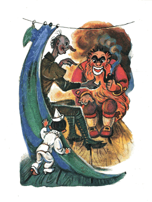
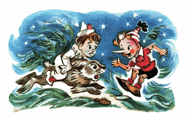
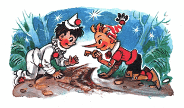

- Jadi begini, Buratino, suatu malam angin berderu kencang, hujan mengguyur deras bagai disiram ember. Signor Karabas Barabas tengah duduk di dekat perapian menghisap cangklong.
Semua boneka sudah terlelap. Hanya aku yang belum tidur. Aku memikirkan tentang seorang gadis berambut biru...
- Sudah kuduga, si Idiot! /sela Buratino/ Tengah malam tadi aku kabur dari gadis itu, dari lemari yang ada laba-labanya.
- Sungguh? Kau menemukan gadis berambut biru? Kau menemukan Malavina-ku?
- Asal kau tau saja! Dia itu rewel dan bawel...
Pierrot terperanjat, melambaikan dua tangannya.
- Antarkan aku padanya... Kalau kau membantuku mendapatkan Malavina, aku akan memberitahumu rahasia kunci emas...
- Sungguh? /teriak Buratino kegirangan/ Kau tahu rahasia kunci emas?
- Tahu, aku tahu di mana kunci itu berada, bagaimana mendapatkannya, aku tahu, bahwa mereka membutuhkannya untuk membuka sebuah pintu... Aku menguping sebuah rahasia, dan karena itulah signor Karabas Barabas mencariku dengan anjing polisi.
Buratino geregetan sekali ingin memamerkan saat itu juga, bahwa kunci misterius itu ada di sakunya. Supaya tidak keceplosan, dia lepas kupluk dari kepalanya lalu dia sumpalkan kemulut.
Pierrot memohon untuk diantarkan ke Malavina. Buratino, menunjuk-nunjuk jidat orang bodoh itu, menjelaskan, bahwa saat ini gelap dan berbahaya, besok dini hari barulah pergi ke rumah gadis itu.
Dia tarik Pierrot kembali bersembunyi di bawah perdu mimosa, Buratino berbicara dengan suara kain, sebagaimana mulutnya disumpal kupluk:
- Shericakan...
- Begini, suatu malam angin berderu kencang...
- Bagian itu sudah kau shericakan...
- Begini, /Pierrot melanjutkan/ Aku kan tidak bisa tidur, lalu tiba-tiba kudengar di jendela ada seseorang mengetuk kencang. Signor Karabas Barabas menggerutu: "Siapa itu yang datang di saat cuaca sedang anjing begini?".
"Ini aku, Duremar", jawab dari jendela, "sales penjual lintah obat. Izinkan aku berdiang di perapian".
Aku, kau tahu, aku penasaran ingin melihat, bagaimana rupa seorang penjual lintah obat. Aku diam-diam menyibakkan tirai lalu mengintip ke dalam ruangan. Lalu kulihat: signor Karabas Barabas beranjak dari kursi, terjerat, seperti biasa, oleh janggutnya sendiri, lalu bersumpah serapah dan membuka pintu.
Masuklah seseorang, basah kuyup seroang pria berwajah kempot keriput, bagaikan jamur morel. Dia mengenakan mantel lusuh warna hijau, di gespernya bergelantungan pinset, kait, dan peniti. Di tangannya dia membawa kaleng dan jaring.
"Jika anda sakit perut," katanya, membungkuk, seolah punggungnya patah ditengah, "atau sakit kepala luar biasa atau telinga anda berdenging, saya dapat meletakkan setengah lusin lintah berkhasiat di kuping anda".
Signor Karabas Barabas menggerutu: "Persetan iblis, tidak usah lintah-lintah! Kau boleh berdiang di perapian sepuasmu".
Duremar pun mengarahkan punggungnya ke perapian.
Lantas dari mantel hijaunya keluar uap dan bau lumpur.
"Bisnis lintah sedang tidak bagus," katanya lagi. "Untuk sepotong babi dingin dan segelas anggur, saya siap untuk menempelkan selusin lintah mujarap di paha anda barangkali anda sedang pegal linu..."
"Persetan iblis, tidak usah lintah-lintah!" bentak karabas barabas "Makan saja babinya dan minum saja anggurnya"
Duremar pun makan babi, pipinya kembang kempis seperti karet. Makan sudah, minum sudah, dia meminta sebatang rokok.
"Signor, saya kenyang dan hangat," dia berkata. "Untuk membalas keramahanmu, saya akan mengungkapkan sebuah rahasia untukmu."
Signor Karabas Barabas menghisap cangklongnya lalu menjawab: "Hanya ada satu rahasia di dunia ini yang ingin ku ketahui. Yang lainnya... cuih, biar ku ludahi dan ku ingusi"
"Signor" Duremar berkata lagi, "Saya mengetahui sebuah rahasia besar; saya diberi tahu oleh penyu Tortilla"
Mendengar kata-kata itu Karabas Barabas matanya melendung, beranjak, terjerat oleh janggutnya, tersungkur tepat ke arah Duremar yang ketakutan, menindih perutnya dan meraung seperti banteng: "Wahai Duremar, Duremar terkasih, katakanlah, katakan lebih banyak, apa yang diberitahukan si penyu Tortilla padamu!"
Lantas Duremar menceritakan kepadanya kisah berikut ini:
Saya menangkap lintah di suatu rawa kotor di dekat Kota Idiot. Empat soldi sehari, saya menyewa seorang pria miskin; dia melepaskan pakaian, berjalan ke dalam rawa setinggi leher, lalu berdiri di sana hingga lintah-lintah menempel ke tubuh telanjangnya.
Lalu dia naik ke darat, untuk saya pungut lintah-lintah yang menempel padanya lalu saya suruh balik lagi ke rawa.
Setelah kami menangkap dengan jumlah yang lumayan, tiba-tiba dari dalam air muncul kepala ular.
"Perhatikanlah, Duremar," kata si kepala ular "Kau menakut-nakuti seluruh penduduk rawa indah kami, airnya kau obok-obok, kau membuatku tak bisa beristirahat dengan nyaman setelah sarapan... Kapan pencemaran ini akan berakhir?.."
Saya perhatikan, ternyata itu hanya seekor penyu, lalu, tanpa takut sama sekali, saya jawab:
"Sampai aku menangkap seluruh lintah di genangan lumpur kalian..."
"Aku siap membayarmu, Duremar, untuk meninggalkan rawa kami dengan damai dan jangan pernah kembali ke sini." Jawabnya
Lantas saya olok-olok penyu itu:
"Ah kau, dasar koper tua ngambang, tante konyol -Tortilla, memangnya kau bisa membayarku pakai apa? Pakai tempurung tulang tempat kau menyembunyikan cakar dan kepala?... Biar kujual tempurungmu pada si kerang..."
Penyu itu menghijau karena marah lalu berkata pada saya:
"Di dasar rawa ini tergeletak sebuah kunci misterius... aku kenal seseorang; dia siap melakukan apapun di dunia ini untuk mendapatkan kunci tersebut... "
Belum selesai Duremar berkata-kata, Karabas Barabas seolah meraung di pangkal tenggorokannya: "Orang itu adalah aku! Aku! AKU! Wahai Duremar, mengapa tidak kau ambil saja kunci itu dari si penyu?"
"Itu dia!" jawab Duremar, mengkerutkan seluruh wajah keriputnya, sehingga dia tampak menjadi seperti jamur morel rebus. "Itu dia! kita tukar lintah-lintah paling berkualitas dengan sebuah kunci ...!"
Singkat kata, kami bercekcok dengan si penyu, lalu dia, mengangkat satu cakarnya ke permukaan air dan berkata:
"Sumpah, kau maupun orang lain tak akan mendapatkan kunci misterius ini. Sumpah! Yang bisa mendapatkannya hanyalah seseorang, yang dapat membuat seluruh penduduk rawa membujukku untuk memberika padanya.
Dengan mengangkat satu cakarnya, penyu itu tenggelam ke dalam air.
"Jangan telat sedetik pun, lekas pergi ke Negeri Idiot!" teriak Karabas Barabas, tergesa-gesa menyelipkan ujung janggutnya ke dalam saku, mengambil topi dan lentera. "Aku akan bersimpuh di tepi rawa. Aku akan tersenyum dengan manis. Aku akan memohon pada katak, berudu, kumbang air, untuk membujuk si penyu... Aku akan menjamin mereka satu setengah juta lalat yang paling gemuk... Aku akan bersedu sedan, bagaikan sapi yang kesepian, merengek, bagai ayam yang sakit, meratap, bagai seekor buaya darat. Aku akan berlutut di hadapan kecebong paling kecil... Kunci itu harus menjadi milikku! aku akan pergi ke suatu kota, masuk ke sebuah rumah, aku akan menyusup ke dalam sebuah pondok di kolong tangga... Aku akan mencari sebuah pintu kecil yang terlantar, yang tidak seorang pun menyadari keberadaannya. Kutancapkan kunci itu ke dalam lubangnya..."
- Dan pada saat itu, kau tau, Buratino, /kata Pierrot, terduduk di bawah perdu mimosa di dedaunan kering/ Aku semakin penasaran, sehingga aku melongok muncul dari balik tirai.
Signor Karabas Barabas memergokiku. "Kau menguping, brengsek!" Dia pun tergesa-gesa, hendak menangkap dan melemparkanku ke perapian, tapi lagi-lagi dia terjerat oleh janggut dan dengan erangan yang mengerikan dia terjungkir, kursi terbalik, dia roboh di lantai.

Aku tidak ingat, bagaimana aku sampai di luar jendela, bagaimana aku memanjat menyeberang pagar. Di dalam kegelapan angin berderu kencang dan hujan mengguyur lebat.
Di atas kepalaku awan hitam diiluminasi kilatan petir, dan sepuluh langkah di belakang ku lihat Karabas Barabas dan penjual lintah berlari mengejar... Dalam benakku: "Mampus", aku tersandung, jatuh ke atas sesuatu yang lembut dan hangat, aku meraih sepasang telinga...
Rupanya itu seekor terwelu abu-abu. Dia memekik kaget, melompat tinggi, tapi aku menggenggam telinganya kuat-kuat, dan kami berpacu di dalam kegelapan melintasi lapangan, kebun anggur, kebun sayur.
Disaat terwelu itu tersungkur kelelahan, bibirnya yang bercabang mengunyah-ngunyah dengan kesal, aku cium keningnya.
"Duh, ayolah, terus melompat, abu-abu, sedikit lagi..."
Terwelu itu menghela nafas, dan sekali lagi kami berpacu entah kemana; belok kanan, belok kiri...
Ketika awan-awan menyeruak dan rembulan telah naik, ku lihat sebuah kota di atas bukit disertai sebuah menara lonceng yang miring ke samping.
Di jalan menuju kota itu, Karabas Barabas dan penjual lintah sedang berlari.
Si terwelu berkata: "Ehehe.. ini dia, nasib seekor terwelu! mereka pergi ke Kota Idiot untuk menyewa anjing polisi. Bersiaplah, kita akan mampus!"
Si terwelu kehilangan mental. Kedua cakarnya menelungkup batang hidungnya, dua telinganya terkulai.
Aku membujuknya, merengek, bahkan bersujud di kakinya. Si terwelu tidak mau bergerak.
Tapi ketika dari kota itu melompat berpacu dua bulldog pesek mengenakan kain hitam di kaki kanan, si terwelu bergidik sekujur tubuhnya, aku sempatkan diri melompat ke atas punggungnya, dan dia pun terbirit-birit ke dalam hutan... Sisanya kau lihat sendiri, Buratino.
Pierrot mengakhiri ceritanya, lalu Buratino bertanya pelan-pelan:
- Lantas di rumah siapa, di pondok kolong tangga yang mana, pintu yang terkunci itu berada?
- Karabas Barabas belum sempat mengatakan hal itu... Ah, percuma bagi kita, kuncinya ada di dasar rawa... Kita tak akan pernah menemukan yang namanya kebahagiaan...
- Kau lihat ini apa? /Buratino memekik di telinganya. Mengeluarkan dari sakunya sebuah kunci, dia iming-iming di depan batang hidung Pierrot/ Ini dia kelakuan si Buratino!
